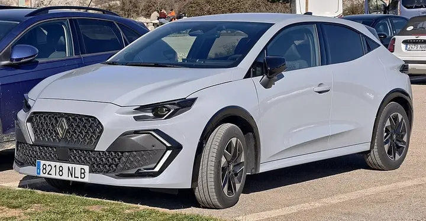
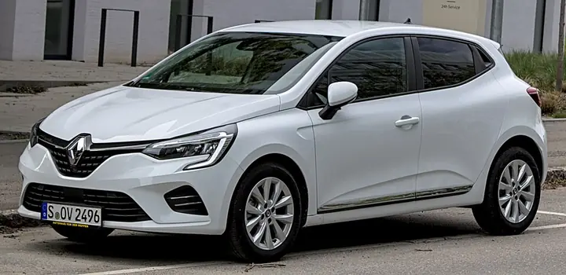
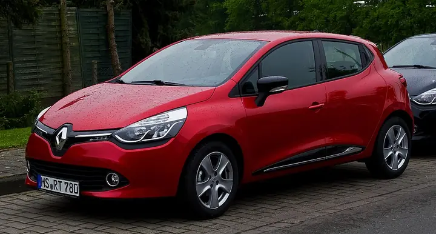
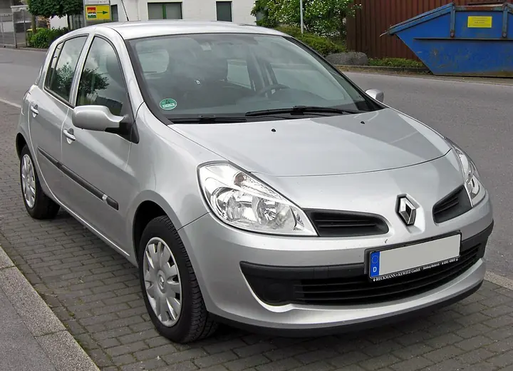
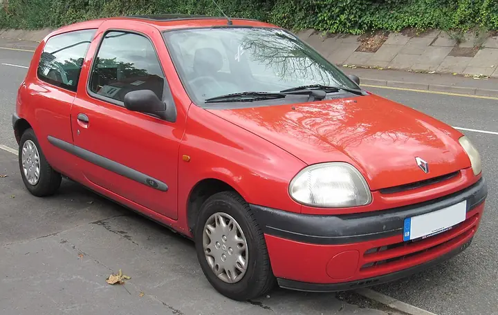
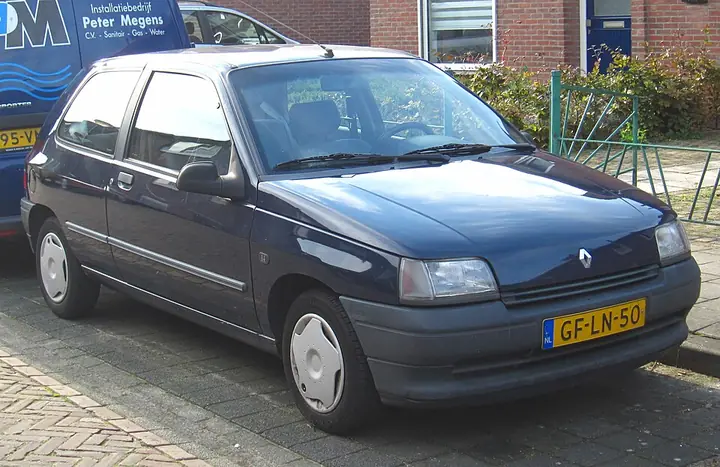

Renault Clio
Sixth generation (X60; 2025) · 2025–present
Abstract
This generation of the Renault Clio was built 15 September 2025 – present in Turkey: Bursa (Oyak-Renault). Body styles: 5-door hatchback.

_%E2%80%93_f_17032026.jpg){kind=link}
Figures of the current version from the manufacturer: Nouvelle Renault Clio specifications (renault.fr), 2026-11.
1Specifications
| Trim levels | evolutiontechnoesprit Alpine |
|---|---|
| Seats | 5 |
| Production | 15 September 2025 – present |
| Assembly | Turkey: Bursa (Oyak-Renault) |
| Body style | 5-door hatchback |
| Platform | Renault–Nissan CMF-B HS platform |
| Engine | TCe 115 ch (84 kW), manualTCe 115 ch EDCEco-G 120 ch EDC (petrol / LPG)full hybrid E-Tech 160 ch |
| Wheelbase | 2,591 mm |
| Length | 4,116 mm |
| Width | 1768 mm |
| Height | 1451 mm |
| Related | Renault Captur IIMitsubishi ASX IIRenault SymbiozMitsubishi GrandisRenault ArkanaNissan Kicks (P16) |
2Previous generations



_%E2%80%93_Frontansicht,_17._Mai_2013,_M%C3%BCnster.jpg){kind=link}





.jpg){kind=link}
3Generation by generation
Length +11% from the first to the last
X57 19903,709 mm
X65 19983,773 mm
X85 20053,986 mm
X98 20124,062 mm
BJA 20184,050 mm
X60 20254,116 mm
Weight +5% from the first to the last
X57 1990930 kg
X65 1998990 kg
X85 20051,150 kg
X98 2012980 kg